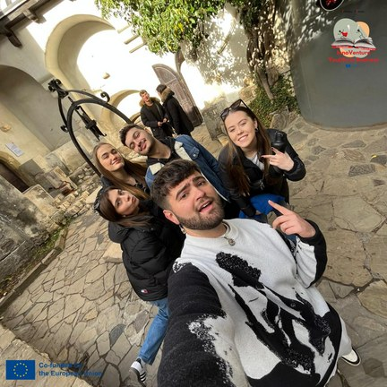
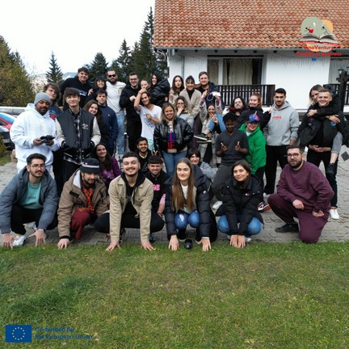
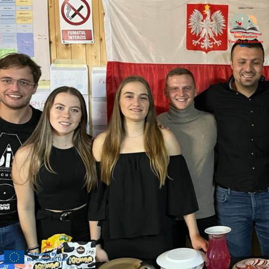

InnoVenture · prima mobilitate din anul 1 al acreditării AIS
You(th) in Business
Tineri în afaceri
Ai o idee? Aici înveți să o planifici, să o testezi și să o transformi într-un concept real, împreună cu o echipă internațională.



NOI 2023InnoVenture
Descriere
În primul an, prin InnoVenture, activitatea Tineri în afaceri a sprijinit inițiativa, planificarea unei idei, lucrul în echipă și transformarea unei idei într-un concept practic.
Participanții au dezvoltat comunicarea, lucrul în echipă, gândirea critică, reflecția, încrederea în sine, inițiativa, adaptabilitatea, colaborarea interculturală și capacitatea de a-și planifica mai conștient viitorul educațional și profesional.
- Perioada
- 9–19 noiembrie 2023
- Loc
- Predeal, România
- Tematică
- Inițiativă, planificare, lucru în echipă
- Cadru
- Acreditarea Erasmus+ AIS
- Etapă
- Anul 1
- Program
- InnoVenture
- Proiect Erasmus+
- 2023-1-RO01-KA151-YOU-000131090
NOI 2023Din fișa proiectului
Developing Entrepreneurial Skills and Empowering Young People
persoane
țări
tineri participanți
tineri cu oportunități reduse
În perioada 9–19 noiembrie 2023, Asociația Inițiative Sociale (AIS) a organizat la Predeal, România, schimbul internațional de tineri „InnoVenture: You(th) in Business” (A1), prima mobilitate implementată în cadrul acreditării Erasmus+ în domeniul tineretului (2022-1-RO01-KA150-YOU-000110034), prin proiectul 2023-1-RO01-KA151-YOU-000131090.
Mobilitatea a reunit 55 de persoane din 7 țări (Bulgaria, Grecia, Italia, Polonia, România, Spania și Turcia), dintre care 45 de tineri cu vârste între 18 și 30 de ani, 8 lideri de grup și 2 facilitatori. Un element important al proiectului l-a constituit incluziunea, prin participarea a 15 tineri cu oportunități reduse (33,3% din totalul tinerilor participanți), care au beneficiat de acces la oportunități internaționale de învățare și dezvoltare personală.
Scopul principal al mobilității a fost dezvoltarea spiritului antreprenorial și îmbunătățirea cunoștințelor, abilităților și atitudinilor necesare tinerilor pentru inițierea și dezvoltarea unor afaceri. Proiectul a urmărit promovarea antreprenoriatului ca oportunitate de dezvoltare profesională, stimularea inițiativei și creativității, dezvoltarea competențelor transversale și consolidarea solidarității, toleranței și cooperării interculturale.
Pe parcursul celor 9 zile de activități educaționale, participanții au fost implicați într-un program intensiv de educație non-formală, bazat pe învățare experiențială, simulări, workshopuri, brainstorming, jocuri de rol, dezbateri, prezentări, lucru în echipe multiculturale, reflecții și evaluări participative.
Activitățile au inclus sesiuni de team-building și incluziune (City Rally, Mission Impossible), prezentări privind antreprenoriatul și oportunitățile de afaceri în cele șapte țări, întâlnirea cu o tânără antreprenoare din SUA, precum și workshopuri tematice dedicate generării ideilor de afaceri, marketingului, brandingului, planificării financiare și promovării produselor.
Un element central al procesului de învățare a fost simularea dezvoltării unei afaceri, în cadrul căreia participanții, organizați în echipe multiculturale, au transformat ideile antreprenoriale în concepte de business, analizând resursele, clienții, strategiile de marketing și bugetele necesare.
Programul a inclus și o vizită culturală și educațională în zona Bran–Brașov, activități interculturale și sesiuni dedicate programului Erasmus+, competențelor-cheie europene și instrumentului Youthpass.
A1 a generat rezultate educaționale și materiale concrete, dezvoltate direct de participanți:
- 7 studii de caz privind antreprenoriatul tinerilor în țările participante;
- 7 firme de exercițiu, fiecare cu un concept antreprenorial propriu;
- 7 planuri de afaceri, însoțite de prezentări și strategii de marketing;
- 7 videoclipuri promoționale, realizate pentru promovarea firmelor de exercițiu;
- 1 broșură de proiect și 1 blog dedicat mobilității;
- materiale foto-video, articole și relatări ale participanților, utilizate pentru promovarea și valorificarea rezultatelor.
Prin aceste activități, cei 45 de tineri au dobândit cunoștințe practice privind dezvoltarea unui plan de afaceri, identificarea oportunităților antreprenoriale, gestionarea resurselor și promovarea produselor sau serviciilor.
Totodată, participanții și-au îmbunătățit competențele de comunicare, leadership, lucru în echipă, rezolvare a problemelor, creativitate, gândire critică, utilizare a instrumentelor digitale și comunicare în limba engleză. Procesul de învățare a fost monitorizat prin reflecții zilnice și evaluări, iar competențele dobândite au fost recunoscute prin instrumentul Youthpass.
Un rezultat relevant al proiectului a fost faptul că 4 tineri au încercat ulterior să implementeze planurile de afaceri dezvoltate în cadrul mobilității, demonstrând potențialul de aplicare practică a competențelor dobândite.
Mobilitatea a fost coordonată de AIS, în colaborare cu cele 6 organizații internaționale partenere, printr-un sistem structurat de planificare, monitorizare și evaluare.
Etapa de pregătire a inclus selecția și pregătirea participanților, încheierea acordurilor de parteneriat, elaborarea programului educațional, organizarea transportului și cazării la Complexul Holiday Panoramic din Predeal, precum și pregătirea materialelor informative și educaționale.
Managementul a fost susținut prin instrumente digitale precum Google Drive, WhatsApp, Facebook și platforme de colaborare online. Pe durata mobilității, întâlnirile cu liderii de grup, reflecțiile zilnice, evaluarea intermediară și cea finală au permis monitorizarea progresului, identificarea nevoilor participanților și adaptarea activităților.
Proiectul a promovat și practici responsabile față de mediu, inclusiv utilizarea materialelor digitale, reducerea consumului de plastic și încurajarea transportului sustenabil.
Rezultatele evaluării post-mobilitate, bazate pe 42 de chestionare, au evidențiat un nivel ridicat de satisfacție și un impact pozitiv asupra dezvoltării personale și profesionale.
Nivelul de satisfacție și dezvoltarea competențelor (scală de evaluare de la 1 la 4 puncte, unde 4 reprezintă punctajul maxim):
- Satisfacția generală: 3,88 din 4 puncte, indicând un nivel foarte ridicat de apreciere a experienței Erasmus+.
- Contribuția mobilității la dezvoltarea personală: 3,48 din 4 puncte, reflectând efectele pozitive asupra încrederii în sine, autonomiei și dezvoltării personale.
- Dezvoltarea capacității de lucru în echipe multiculturale: 3,62 din 4 puncte, evidențiind îmbunătățirea cooperării și comunicării între tineri din medii culturale diferite.
Schimbări pozitive și competențe dobândite (42 de respondenți):
- 97,6% dintre respondenți (41 din 42) au identificat schimbări personale pozitive ca urmare a participării la proiect.
- 83,3% dintre respondenți (35 din 42) au declarat că și-au dezvoltat competențele antreprenoriale prin activitățile desfășurate.
- 97,6% dintre respondenți (41 din 42) au confirmat că s-au simțit sprijiniți de organizația gazdă pe durata mobilității.
Aceste rezultate demonstrează contribuția proiectului la dezvoltarea competențelor antreprenoriale și sociale, precum și eficiența abordării bazate pe educație non-formală și învățare experiențială.
Feedbackul celor 8 lideri de grup a fost foarte pozitiv: 8/8 au declarat că sunt „Very satisfied” cu experiența mobilității. Toți cei opt au apreciat că participanții și-au clarificat aspirațiile și obiectivele profesionale, iar șase au remarcat o îmbunătățire a perspectivelor de angajare și a pregătirii pentru continuarea educației sau formării profesionale.
Evaluarea organizațiilor partenere a confirmat calitatea managementului și cooperării, fiind înregistrate scoruri de 5 din 5 puncte pentru comunicarea cu partenerii, 4,67 din 5 puncte pentru colaborarea dintre organizații și 4,5 din 5 puncte pentru atingerea obiectivelor proiectului.
Mobilitatea a contribuit și la dezvoltarea capacității organizaționale AIS, consolidarea relațiilor internaționale și extinderea rețelei de parteneri prin includerea unei noi organizații, D.G.T. Polska.
Rezultatele proiectului au fost promovate prin intermediul blogului dedicat, al rețelelor sociale, materialelor educaționale, evenimentelor de informare și activităților de multiplicare organizate de parteneri.
În cadrul A1 au fost documentate cel puțin 8 sesiuni de diseminare în 5 țări (România, Grecia, Polonia, Spania și Turcia), reunind aproximativ 150 de participări. Acestora li s-au adăugat realizarea unui podcast în Italia, prezentarea materialelor de proiect în instituții educaționale din Polonia și promovarea online prin rețelele organizațiilor și ale participanților.
Blogul A1 a înregistrat peste 1.641 de vizitatori, contribuind la creșterea vizibilității proiectului și la promovarea oportunităților Erasmus+, a educației non-formale și a antreprenoriatului în rândul tinerilor.
Materialele și resursele educaționale realizate au fost puse la dispoziția publicului prin blogul proiectului, facilitând utilizarea și valorificarea acestora și după finalizarea mobilității.
„InnoVenture: You(th) in Business” a reprezentat un prim pas important în implementarea acreditării Erasmus+ a Asociației Inițiative Sociale, contribuind la atingerea obiectivelor strategice privind antreprenoriatul, dezvoltarea competențelor tinerilor, incluziunea socială, cooperarea interculturală și consolidarea capacității organizaționale.
Prin implicarea celor 55 de persoane, realizarea celor 7 concepte antreprenoriale și a materialelor educaționale asociate, precum și prin rezultatele pozitive ale evaluării și activităților de diseminare, mobilitatea a demonstrat valoarea educației non-formale în pregătirea tinerilor pentru provocările economice și profesionale.
Experiența și rezultatele A1 au constituit, totodată, o bază pentru dezvoltarea următoarelor activități organizate de AIS în cadrul acreditării Erasmus+, contribuind la continuitatea inițiativelor dedicate antreprenoriatului și angajabilității tinerilor.
The story continues! Together we are stronger!